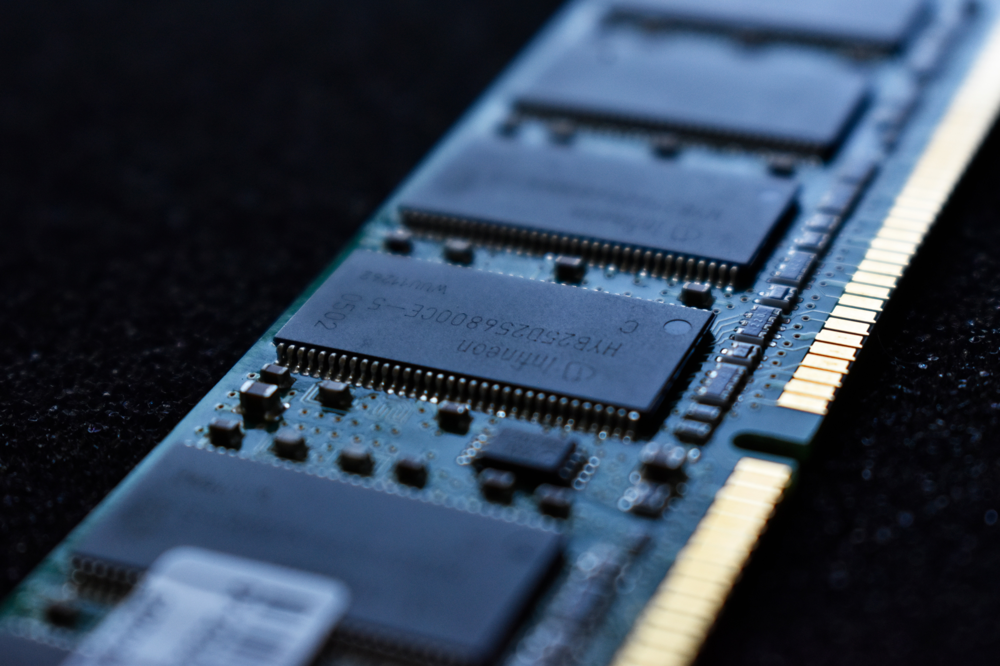

The CPU is one of the most important parts of a computer. There multiple parts to this part.
The scheduler takes incoming instructions from the memory and decodes them. It sends the data to other parts the system which will then execute the instruction. On a multi-core CPU, there is a scheduler in each core as well as a thread dispatcher that overssees each individual scheduler. These instructions are read from an instruciton cache, which reads instructions from the RAM.
The Arithmetic Logic Unit is what does all of the math. Surprisingly, it only does integer math. This may come as a suprise since the kinds of calculations a computer can do in such small amounts of time is mind blowing. The ALU only has instructions that tells it how to add, subtract, multiply, and divide integers, as well as instrucitons to compare them.
The FPU, or Floating Point Unit is the companion to the ALU. Click here if you want to learn more about it.The FPU does floating-point math. Floating-point is a way to represent decimals in computers.
Source: https://www.quora.com/What-are-the-different-internal-parts-of-a-CPU-and-their-functions
The Motherboard is what allows all the different parts of a computer to communicate with eachother. It is what brings everything together.
This part of the motherboard is typically located at the center of the board. This is where the CPU is installed.
This is where the power supply's main connect gets attached to the motherbaord, allowing all of the components to recieve power. The power connect is typically a 20 or 24 pin connector and is typically near the right edge of the motherboard or somewhere close to the processor socket.
The memory slots are typically located in the upper-right part of a motherboard. This is where the computer's memory modules are attached. A motherboard can hold up to 8 memory modules. Click here to learn about different kinds of memory.
The different kinds of memory are DDR3, DDR4 and DDR5
This is where the video card is attached to the computer. On newer motherboards, this slot is a PCI Express slot. Some older computers don't have this slot, which means you have to rely on the integrated video card, which is not going to achieve any kind of performance close to the kind you can get with an external one.
Expansion slots allow you to install additional components to enhance the functionality of a PC. For example, these slots can be used to install a better video card or sound card.
RAM serves as the computers working memory. More RAM available, the more a computer can do at the same time.
